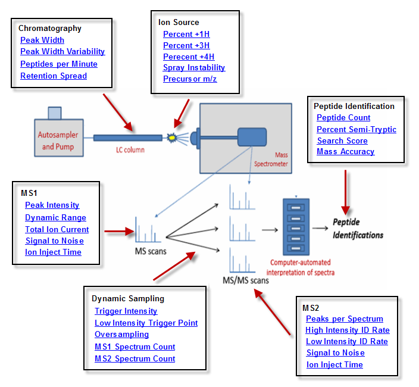

Click on the Metric map below to learn more about MassQC:

- Are you seeing the same number of peptides for each standard run?
- Are your current measurements up to your best practices in the past?
- Which factors might be contributing to the variation in performance and reproducibility
Metrics in the MassQC dashboard let you monitor the performance of chromatography, ion source, MS1, dynamic sampling, MS2 and peptide identifications.
NIST , National Institute of Standards and Technology , created these performance metrics for proteomics as part of a program to improve reproducibility in proteomics funded by the NCI/NIH.
This study, the "Clinical Proteomics Assessment Technologies for Cancer" (CPTAC) study also had the following institutions participating.
- Broad Institute of MIT and Harvard
- Memorial Sloan-Kettering Cancer Center
- Purdue University
- University of California, San Francisco
- Vanderbilt University School of Medicine
NIST has spent two years refining potential MS Metrics to determine which are informative and which are not for evaluating whether a tandem mass spectrometer used for proteomics research is performing optimally.
Proteome Software has built MassQC upon the foundation that NIST provided.